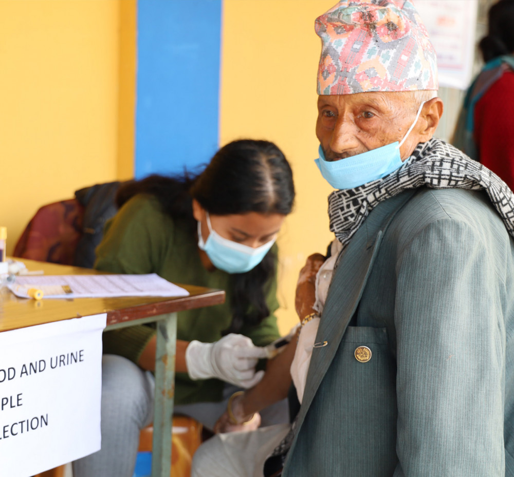

KHDC Nepal screens, educates and treats people in the community for Chronic Kidney Disease, Hypertension, Diabetes and Cardiovascular disease — finding the hidden risk before symptoms ever appear.

KHDC is a community outreach programme led by Prof. Dr. Sanjib Kumar Sharma, Professor of Internal Medicine at BPKIHS, running since 2003. The program works on prevention, early detection and management of Chronic Kidney Disease, Hypertension, Diabetes and Cardiovascular disease across the community of Nepal.
To date, it has reached more than 130,000 individuals in and around Dharan city — through direct screening, health education, and training of local health workers.
Worldwide, roughly two-thirds of the 55 million people who die each year die from non-communicable diseases and their complications. In Nepal and other lower and middle-income countries, NCDs and their complications account for around 80% of all deaths.
Hypertension, chronic kidney disease, diabetes, dyslipidaemia and cardiovascular disease commonly develop from modifiable risk factors — obesity and sedentary living chief among them — and risk climbs with age and family history.
By the time symptoms appear, the disease has often already progressed. Our screening finds it earlier:
Real locations of our Phase II screening operations across Jhapa and Panchthar districts. Click a marker to see that area's totals — ward-level breakdowns are in the table further down the page.
| Ward | Facility | Screened | High-risk |
|---|---|---|---|
| Damak-9 | UHC | 2,342 | 2,308 |
| Damak-4 | BHSC | 1,701 | 1,653 |
| Damak-1 | — | 1,054 | 1,050 |
| Damak-5 | BHSC | 1,983 | 1,945 |
| Damak-2 | BHSC | 1,542 | 1,464 |
| Damak-8 | BHSC | 1,712 | 1,688 |
| Damak-7 | BHSC | 1,227 | 1,196 |
| Damak-3 | UHC | 1,233 | 1,222 |
| Damak-10 | — | 1,544 | 1,509 |
| Damak-6 | — | — | — |
| Ward | Screened | High-risk |
|---|---|---|
| Mechinagar-11 | 1039 | 1009 |
| Mechinagar-15 | 1082 | 1023 |
| Mechinagar-14 | 1291 | 1147 |
| Mechinagar-4 | 1258 | 1144 |
| Mechinagar-6 | 2071 | 1995 |
| Mechinagar-8 | 1646 | 1509 |
| Ward | Screened | High-risk |
|---|---|---|
| Phungling-11 | 431 | 402 |
| Phungling-10A | 748 | 709 |
| Phungling-10B | 437 | 419 |
| Phungling-09B | 1251 | 1165 |
| Phungling-09A | 467 | 425 |
| Phungling-06A | 254 | 239 |
| Phungling-06B | 273 | 264 |
| Phungling-05B | 160 | 159 |
| Phungling-08A | 426 | 423 |
| Phungling-08B | 659 | 637 |
| Phungling-03 | 998 | 968 |
| Phungling-01 | 568 | 519 |
| Phungling-06 | 78 | 74 |
| Phungling-02 | 629 | 591 |
| Phungling-04 | 2170 | 2063 |
| Phungling-05 | 149 | 137 |
| Phungling-06 | 597 | 525 |
| Phungling-07 | 533 | 452 |
Every screening, training and campaign KHDC runs falls under one of four commitments — the framework that turns a single community visit into lasting prevention.
Early detection and management of NCDs, to prevent complications before symptoms ever develop.
Build public awareness of NCDs, their impact, and the lifestyle changes that minimise risk.
Develop the competencies of health care professionals to improve NCD care at the primary level.
Generate evidence-based interventions and advocate for their implementation nationally and internationally.
A healthy society, free from non-communicable disease.
Prevent cardiovascular and kidney disease through healthy lifestyle promotion, early detection, and management of risk factors like high cholesterol, smoking and obesity.
130,000+ individuals reached in Dharan city and its surrounding communities since 2003, and growing.
Since 2003, KHDC Nepal has worked to reach community members living with chronic kidney, hypertension, diabetes and cardiovascular conditions directly — through health awareness, active screening and early detection.
Identifying people at risk and offering counselling and treatment early gives them real control over their health, before these conditions can progress.
Our experience shows that community-based screening is essential to catching NCDs early — and that early detection lets us manage risk proactively, improving outcomes for individuals and the wider community alike.
Better health isn't only about treatment. It's about education and awareness — so our outreach connects people with the care they need, alongside the knowledge to protect themselves going forward. As we look ahead, our aim is to make this work sustainable by weaving KHDC into existing local health infrastructure.
None of this happens without our health professionals, volunteers, stakeholders and supporters — their expertise and compassion are what carry this mission forward.